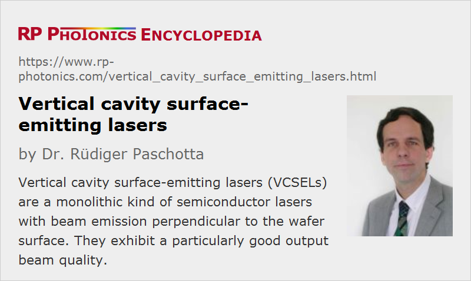

Vertical Cavity Surface-emitting Lasers
Acronym: VCSEL
Definition: a monolithic kind of semiconductor lasers with beam emission perpendicular to the wafer surface
More general term: surface-emitting semiconductor lasers
How to cite the article; suggest additional literature
Author: Dr. Rüdiger Paschotta
VCSELs are semiconductor lasers, more specifically laser diodes with a monolithic laser resonator, where the emitted light leaves the device in a direction perpendicular to the chip surface. The resonator (cavity) is realized with two semiconductor Bragg mirrors (→ distributed Bragg reflector lasers). Between those, there is an active region (gain structure) with (typically) several quantum wells and a total thickness of only a few micrometers. In most cases, the active region is electrically pumped with a few tens of milliwatts and generates an output power in the range from 0.5–5 mW, or higher powers for multimode devices (see below). The current is often applied through a ring electrode, through which the output beam can be extracted, and the current is confined to the region of the resonator mode using electrically conductive (doped) mirror layers with isolating material around them.
VCSELs can have a high beam quality only for fairly small mode areas (diameters of a few microns) and are thus limited in terms of output power. For larger mode areas, the excitation of higher-order transverse modes can not be avoided; this is a consequence of the extremely small resonator length of only a few microns, and the difficulty in homogeneously pumping a larger active region with a ring electrode. The short resonator, however, also makes it easy to achieve single-frequency operation, even combined with some wavelength tunability. Also, VCSELs can be modulated with high frequencies, making them useful e.g. for optical fiber communications (see below).
In addition to the high beam quality of low-power VCSELs, an important aspect is the low beam divergence, compared with that of edge-emitting laser diodes, and the symmetric beam profile. This makes it easy to collimate the output beam with a simple lens, which does not have to have a very high numerical aperture.
The most common emission wavelengths of VCSELs are in the range of 750–980 nm (often around 850 nm), as obtained with the GaAs/AlGaAs material system. However, longer wavelengths of e.g. 1.3 μm, 1.55 μm or even beyond 2 μm (as required for, e.g., gas sensing) can be obtained with dilute nitrides (GaInNAs quantum wells on GaAs) and from devices based on indium phosphide (InAlGaAsP on InP).
There are also optical amplifiers which are very similar to VCSELs: they are basically VCSELs with reduced top mirror reflectivity. See the article on semiconductor optical amplifiers.
An important practical advantage of VCSELs, as compared with edge-emitting semiconductor lasers, is that they can be tested and characterized directly after growth, i.e. before the wafer is cleaved. This makes it possible to identify quality problems early on, and to react immediately. Furthermore, it is possible to combine a VCSEL wafer with an array of optical elements (e.g. collimation lenses) and then dice this composite wafer instead of mounting the optical elements individually for every VCSEL. This allows for cheap mass production of laser products.
Another interesting feature of VCSELs is that is due to the substantially lower optical intensities at the facet, compared with edge-emitting laser diodes, there is no risk of catastrophic optical damage, even in post operation with substantial peak powers. Therefore, they can also be operated at higher temperatures, which would normally increase the risk of catastrophic facet failure.
Thresholdless Lasers
Special VCSELs have been developed which are essentially thresholdless lasers. They are interesting in this domain because they allow the utilization of quantum effects related to the modification of the mode density by the cavity. With such a technique, a threshold current of only 36 μA has been demonstrated [3].
VCSEL Arrays
Much higher powers can be generated with VCSEL arrays. A 2-D VCSEL array containing many thousand emitters (with a spacing of some tens of microns) can emit tens or hundreds of watts continuous-wave, thus competing with diode bars. In principle, the output power can simply be scaled up (“power scaling”) by increasing the number of emitters, but the beam quality it is often strongly reduced. However, there are also approaches where the emission of all the VCSELs of an array is coordinated (made coherent), which results in a far better beam quality and accordingly increased radiance, despite some loss of power conversion efficiency.
In comparison with conventional edge-emitting laser diodes, VCSEL arrays typically have a somewhat lower power conversion efficiency, but there can be substantial advantages for applications, such as the simplification or even illumination of beam shaping optics, the small emission linewidth, the higher wavelength stability and the substantial peak power potential in post operation.
See the article on VCSEL arrays for more details.
Applications
VCSELs have many applications, the most important of which are briefly discussed in the following:
Optical Communications
Due to the short resonator round-trip time, VCSELs can be modulated with frequencies well in the gigahertz range. This makes them useful as transmitters for optical fiber communications and for free-space optical communications. For short-range communications, 850-nm VCSELs are used in combination with multimode fibers. A data rate of e.g. 10 Gbit/s can be reached over a distance of a few hundred meters.
Computer Mice
An application area which was developed later, but has acquired a large market volume, is that of computer mice. A laser mouse with a VCSEL as light source can have a high tracking precision combined with a low electricity consumption, as is important for battery-powered devices.
Gas Sensing
Another prominent field of application is gas sensing with wavelength-tunable infrared VCSELs. Such devices are built e.g. as MEMS VCSELs, having a separate output coupling mirror the position of which can be tuned via thermal expansion, electrostatic forces, or a piezoelectric element. In this area, VCSELs partially compete with distributed feedback lasers (DFB lasers), but offer a smaller drive current, a wider tuning range and a higher modulation speed.
Optical oxygen sensors are of particular importance, because an absorption line at 760 nm is in reach of GaAs-based VCSELs, whereas longer-wavelength VCSELs which could be used for detecting water vapor, methane, or carbon dioxide need some further development before widespread use.
Optical Clocks
VCSELs can also be used in miniature optical clocks, where the laser beam probes an atomic transition in cesium vapor. Such clocks could become part of compact GPS devices.
Laser Pumping
Due to their high output powers, VCSEL arrays can often compete with diode bars (partially even with diode stacks), e.g. for pumping solid-state lasers.
Suppliers
The RP Photonics Buyer's Guide contains 19 suppliers for vertical cavity surface-emitting lasers. Among them:
Questions and Comments from Users
Here you can submit questions and comments. As far as they get accepted by the author, they will appear above this paragraph together with the author’s answer. The author will decide on acceptance based on certain criteria. Essentially, the issue must be of sufficiently broad interest.
Please do not enter personal data here; we would otherwise delete it soon. (See also our privacy declaration.) If you wish to receive personal feedback or consultancy from the author, please contact him e.g. via e-mail.
By submitting the information, you give your consent to the potential publication of your inputs on our website according to our rules. (If you later retract your consent, we will delete those inputs.) As your inputs are first reviewed by the author, they may be published with some delay.
Bibliography
| [1] | J. L. Jewell et al., “Vertical-cavity surface-emitting lasers: design, growth, fabrication, characterization”, IEEE J. Quantum Electron. 27 (6), 1332 (1991), doi:10.1109/3.89950 |
| [2] | R. A. Morgan, “Vertical-cavity surface-emitting lasers: present and future”, Proc. SPIE 3003, 14 (1997), doi:10.1117/12.271061 |
| [3] | D. L. Huffaker and D. G. Deppe, “Improved performance of oxide-confined vertical-cavity surface-emitting lasers using a tunnel injection active region”, Appl. Phys. Lett. 71, 1449 (1997), doi:10.1063/1.119933 |
| [4] | W. W. Chow et al., “Design, fabrication, and performance of infrared and visible vertical-cavity surface-emitting lasers”, IEEE J. Quantum Electron. 33 (10), 1810 (1997), doi:10.1109/3.631287 |
| [5] | R. Michalzik et al., “Progress in high-power VCSELs and arrays”, Proc. SPIE 3419, 187 (1998), doi:10.1117/12.311008 |
| [6] | C. J. Chang-Hasnain, “Tunable VCSEL”, J. Sel. Top. Quantum Electron. 6 (6), 978 (2000), doi:10.1109/2944.902146 |
| [7] | A. Karim et al., “Long-wavelength vertical-cavity lasers and amplifiers”, J. Sel. Top. Quantum Electron. 6 (6), 1244 (2000), doi:10.1109/2944.902174 |
| [8] | S. R. Bank et al., “Recent Progress on 1.55- μm Dilute-Nitride Lasers”, IEEE J. Quantum Electron. 43 (9), 773 (2007), doi:10.1109/JQE.2007.902301 |
| [9] | M. C. Y. Huang et al., “A nanoelectromechanical tunable laser”, Nature Photon. 2, 180 (2008), doi:10.1038/nphoton.2008.3 |
| [10] | T.-C. Lu et al., “CW lasing of current injection blue GaN-based vertical cavity surface emitting laser”, Appl. Phys. Lett. 92, 141102 (2008), doi:10.1063/1.2908034 |
| [11] | P. Westbergh et al., “Large aperture 850 nm VCSELs operating at bit rates up to 25 Gbit/s”, Electron. Lett. 44, 907 (2008), doi:10.1049/el:20081475 |
| [12] | Y. Higuchi et al., “Room-temperature CW lasing of a GaN-based vertical-cavity surface-emitting laser by current injection”, Appl. Phys. Express 1, 121102 (2008) |
| [13] | A. Higuchi et al., “High power density vertical-cavity surface-emitting lasers with ion implanted isolated current aperture”, Opt. Express 20 (4), 4206 (2012), doi:10.1364/OE.20.004206 |
| [14] | R. Michalzik (ed.), VCSELs. Fundamentals, Technology and Applications of Vertical-Cavity Surface-Emitting Lasers, ISBN 978-3-642-24986-0, Springer (2013) |
See also: vertical external-cavity surface-emitting lasers, surface-emitting semiconductor lasers, single-frequency lasers
and other articles in the category lasers
|  |
If you like this page, please share the link with your friends and colleagues, e.g. via social media:
These sharing buttons are implemented in a privacy-friendly way!